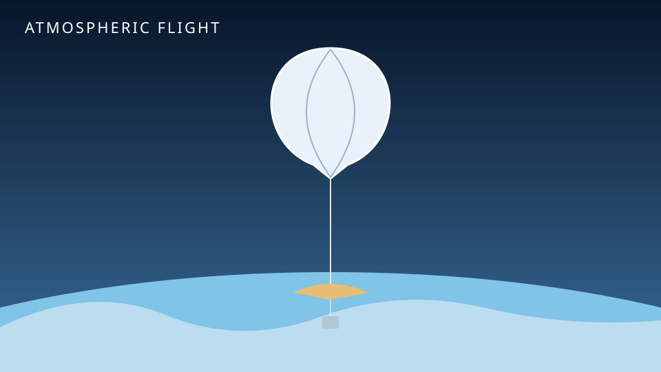
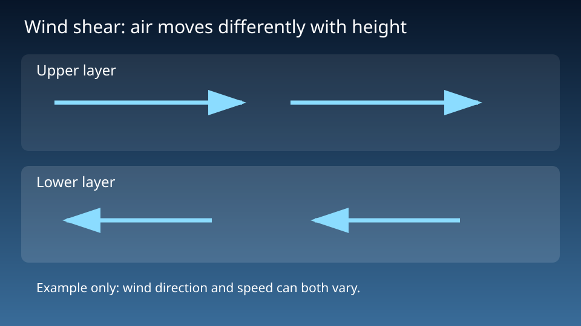
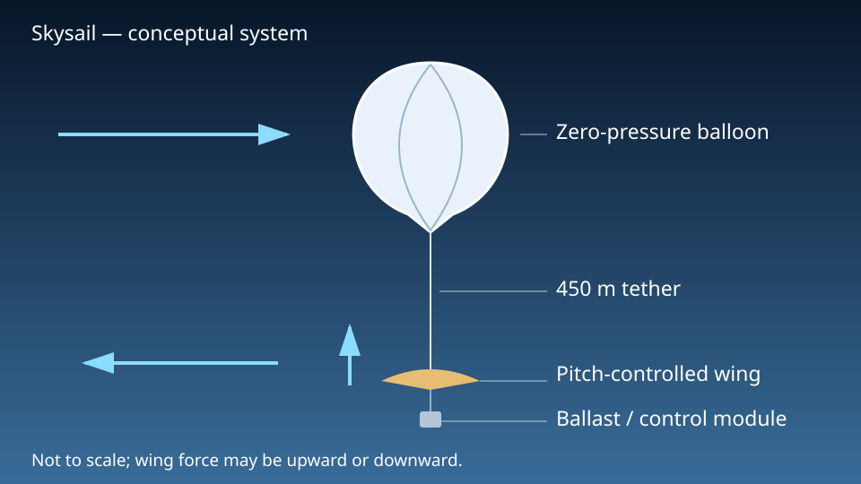

Science & Technology / Aerospace physics · Preprint research
Can a Weather Balloon Control Its Altitude Using Nothing but the Wind?
Discover how Skysail uses atmospheric wind shear to control a weather balloon’s altitude and what this reveals about unconventional flight technology.
4–5 minute read · Research submitted November 25, 2026 · Peer review not confirmed

The puzzle
Can a drifting balloon repeatedly change altitude using its environment?
The evidence
Researchers report multi-day experimental flights.
The limit
Control depends on wind conditions; powered controls and fallback mechanisms remain.
More than a balloon drifting in the wind
Imagine watching a research balloon descend, reverse direction and climb again. There is no visible propeller pulling it upward. What is making it move?
For scientists collecting weather measurements, this is more than a curiosity. A balloon that can revisit different heights can sample the atmosphere repeatedly. Conventional long-duration balloons can change their buoyancy by disposing of ballast or releasing lifting gas. Both options eventually run out.
There is another possibility: use the air itself. The Skysail project explores whether a balloon can draw on motion already present in the environment rather than relying entirely on resources carried at launch.
The hidden energy in Earth's atmosphere
Imagine two neighboring rivers flowing at different speeds. A floating platform connected to both would experience different currents. Air can behave similarly, although the layers have no solid boundaries. Meteorologists call changes in wind velocity with position wind shear.

Wind speed alone is not enough to explain the effect. A balloon moving with its local air may experience little horizontal airflow around itself. A device suspended far below it can encounter air moving differently, creating an opportunity to generate aerodynamic forces.
What is Skysail?
WindBorne Systems researchers Michal Adamkiewicz and Andrey Sushko tested a small adjustable wing on a 450-meter line beneath a zero-pressure balloon. Changing the wing's orientation changes the vertical force transmitted through the system.

How wind becomes vertical motion
A wing can redirect flowing air, and the resulting force depends on its orientation. Think of holding your hand out of a moving car window: tilting it can change whether the airflow pushes your hand upward or downward. The analogy is limited, but it helps explain why a wing need not have its own propeller to exert a force.
The balloon and wing are connected, so a change in aerodynamic force affects the flight system as a whole. The mechanical energy comes from relative atmospheric motion. Electronic controls still require power; the headline refers to the source of the aerodynamic work, not a completely power-free machine.
Taking the concept into the real world
43-hour interval
53 km11 profiles, with no ballast discarded or gas vented during that interval.
Separate eight-day flight
159 km24 profiles spanning more than 1 km each.
Author-reported cumulative vertical travel, not maximum altitude or a single climb. These are not matched-duration efficiency comparisons.
Repeated sampling is the practical goal. A balloon moving up and down can collect information from many levels rather than remaining within one moving air mass. Such observations can help researchers examine changing conditions and improve their understanding of weather.
What are the limitations?
The system cannot guarantee a desired movement in every wind environment. When the relative wind becomes too weak, the available aerodynamic force falls. Conventional gas and ballast controls are retained. Deployment reliability also presents an engineering challenge. The paper is a preprint by the developers; independent replication and peer-reviewed acceptance have not been established.
Explore the science: buoyancy, pitch and wind shear
Buoyancy is the upward force created by displaced air. The net vertical force also depends on the system's weight and aerodynamic forces. Wing pitch changes the angle presented to the relative airflow. For a given air density and wing configuration, aerodynamic force scales approximately with the square of relative airspeed. Lower air density or weaker wind differences reduce the available control authority.
See sections III–V of the full preprint for the engineering model, flight tests and limitations.
What could this mean for UAP investigations?
People often identify objects partly by how they expect them to behave. But those expectations depend on familiarity with the technology. A balloon that changes altitude deliberately may look unusual to someone who assumes all balloons simply drift.
This is a reason to investigate the forces, environment and possible platform capabilities before drawing conclusions from observed movement. It is also why the quality of the measurement matters. Our satellite radar feature examines a different challenge: separating physical movement from effects on the measuring signal.
The bigger picture
Unfamiliar engineering can make familiar physics look surprising. The next time you see an object behaving differently from your expectations, consider whether the missing piece might be something you cannot see: an aerodynamic surface, an environmental force or an unfamiliar control system.
Continue the Investigation
Research behind this story
Adamkiewicz, M. & Sushko, A. (WindBorne Systems). Skysail: Altitude Control of Long-Duration Weather Balloons by Extracting Work from Wind Shear. arXiv:2611.33882v1, November 25, 2026. Submitted to ICRA 2027; peer review not confirmed. Original research · Knowledge-graph record.
Editorial standard: Lead with curiosity. Explain with clarity. Support with evidence.